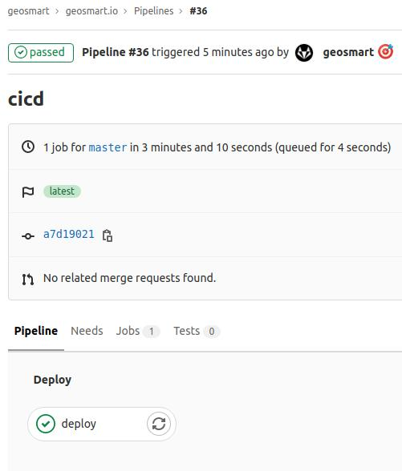

gitlab搭建在自家的nas上，k3s部署于阿里云的ecs，自己提交代码后，通过gitlab runner自动执行pipeline。cicd自动执行2个操作：
部署环境
- master：1C2G,CentOS Linux 7 (Core)
- agent1：2C8G,CentOS Linux 8
- agent2：1C2G,Alibaba Cloud Linux 3 (Soaring Falcon)
别人的好机器只能当worker，自己的烂机器当master,-_-
端口开通
阿里云ecs安全策略开通以下接口。
| 协议 | 端口 | 源 | 描述 |
|---|---|---|---|
| TCP | 6443 | K3s agent 节点 | Kubernetes API Server |
| UDP | 8472 | K3s server 和 agent 节点 | 仅对 Flannel VXLAN 需要 |
| TCP | 10250 | K3s server 和 agent 节点 | Kubelet metrics |
| TCP | 2379-2380 | K3s server 节点 | 只有嵌入式 etcd 高可用才需要 |
master
master_ip=ip1
安装master
1 | curl -sfL http://rancher-mirror.cnrancher.com/k3s/k3s-install.sh | \ |
修改启动配置
sudo vim /etc/systemd/system/multi-user.target.wants/k3s.service1
ExecStart=/usr/local/bin/k3s server '--tls-san' '${master_ip}' write-kubeconfig-mode 664 --node-ip ${master_ip} --node-external-ip ${master_ip}
apiserver地址
master操作
- 查看
join_token：cat /var/lib/rancher/k3s/server/node-token - 查看kubeconfig：
cat /etc/rancher/k3s/k3s.yaml
agent
agent_ip=ip2
安装agent
1 | curl -sfL http://rancher-mirror.cnrancher.com/k3s/k3s-install.sh | \ |
修改启动配置
sudo vim /etc/systemd/system/multi-user.target.wants/k3s.service
1 | /usr/local/bin/k3s agent --server https://${master_ip}:6443 --node-name ${agent_ip} --with-node-id --node-ip ${agent_ip} --node-external-ip ${agent_ip} --token ${join_token} |
重启
systemctl daemon-reload
systemctl restart k3s
dashboard
- bear token生成：
k3s kubectl -n kubernetes-dashboard describe secret admin-user-token | grep '^token' - 本地端口代理：
kubectl port-forward -n kubernetes-dashboard service/kubernetes-dashboard 8080:443 - 浏览器访问
- firefox访问：
https://localhost:8080 - chrome访问：
https://localhost:8080,在打开后键盘输入：thisisunsafe
- firefox访问：
gitlab连接k3s集群
api地址
certification
k3s kubectl config view —raw -o=jsonpath=’{.clusters[0].cluster.certificate-authority-data}’ | base64 —decode
创建账户
kubectl apply -f gitlab_admin.yaml1
2
3
4
5
6
7
8
9
10
11
12
13
14
15
16
17
18apiVersion: v1
kind: ServiceAccount
metadata:
name: gitlab-admin
namespace: kube-system
apiVersion: rbac.authorization.k8s.io/v1beta1
kind: ClusterRoleBinding
metadata:
name: gitlab-admin
roleRef:
apiGroup: rbac.authorization.k8s.io
kind: ClusterRole
name: cluster-admin
subjects:
- kind: ServiceAccount
name: gitlab-admin
namespace: kube-system
查看token
1 | SECRET=$(kubectl -n kube-system get secret | grep gitlab-admin | awk '{print $1}') |
本地代理
kubectl port-forward -n kubernetes-dashboard service/kubernetes-dashboard 8080:443
网络调试
调试工具
1 | apiVersion: v1 |
测试dns：kubectl exec -it busybox -- nslookup gitlab-org.gitlab.io
用好
dig和nslookup排查网络连接问题
coredns配置域名
gitlab-runner内部报错，不能访问外网的gitlab服务器1
WARNING: Checking for jobs... failed runner=6Kxs-qJj status=couldn't execute POST against http://www.geosmart.top:40000/api/v4/jobs/request: Post http://www.geosmart.top:40000/api/v4/jobs/request: dial tcp: lookup www.geosmart.top on 10.43.0.10:53: no such host
将root dns服务器由forward /etc/resolv.conf改为外网的forward . 114.114.114.114就可以了
针对不能连接的域名，在kubectl -n kube-system edit cm coredns新增host配置即可1
2
3
4
5
6hosts /etc/coredns/NodeHosts {
115.196.121.1 www.mydomain.top
ttl 60
reload 15s
fallthrough
}
k3s卸载
/usr/local/bin/k3s-uninstall.sh
gitlab.cicd

gitlab-ci.yaml示例1
2
3
4
5
6
7
8
9
10
11
12
13
14
15
16
17
18
19
20image: node:10.19.0
cache:
paths:
- hexo/node_modules/
before_script:
- cd hexo
- npm install hexo-cli -g
- test -e package.json && npm install
stages:
- deploy
deploy:
stage: deploy
script:
- hexo g -d
only:
- master
github推送问题
gnutls_handshake() failed: The TLS connection was non-properly terminated.
因为source有git修改记录，public网站不需要修改记录
所以改为ssh认证，每次push -f强制替换网站